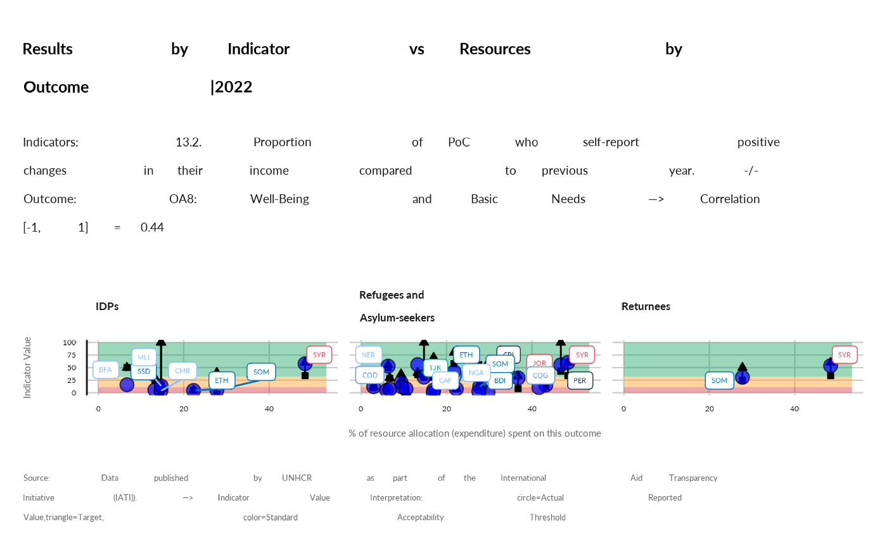

compare_resource_result
Usage
compare_resource_result(
year = 2022,
ctr_name = NULL,
pop_type = NULL,
show_baseline = FALSE,
show_target = FALSE,
indicator,
outcome
)Arguments
- year
A numeric value or a vector of numeric value to filter on year. Note that data pre-2022 are using a different set of indicators
- ctr_name
A character vector corresponding to the name of the country.
- pop_type
default is null - but can be used to filter on population type: "Refugees and Asylum-seekers","IDPs" ,"Stateless Persons" "Others of Concern" ,"Returnees" , "Host Community"
- show_baseline
TRUE / FALSE boolean to indicate whether to filter and display records that have a baseline value. This will likely impact the number of clean records that can be plotted...
- show_target
TRUE / FALSE boolean to indicate whether to filter and display records that have a target value This will likely impact the number of clean records that can be plotted...
- indicator
one specific indicators - label
- outcome
any of: "OA1: Access to Territory, Reg. and Documentation", "OA2: Status Determination", "OA3: Protection Policy and Law", "OA4: Sexual and Gender-based Violence", "OA5: Child Protection", "OA6: Safety and Access to Justice", "OA7: Community Engagement and Women's Empowerment", "OA8: Well-Being and Basic Needs", "OA9: Sustainable Housing and Settlements", "OA10: Healthy Lives" , "OA11: Education", "OA12: Clean Water, Sanitation and Hygiene", "OA13: Self Reliance, Economic Inclusion and Livelihoods", "OA14: Voluntary Repatriation and Sustainable Reintegration", "OA15: Resettlement and Complementary Pathways", "OA16: Local Integration and other Local Solutions"
Examples
# See a list of indicators per area of work
list_indic <- iati::mapping_indicator |>
janitor::clean_names() |>
dplyr::filter( results_level =="Outcome") |>
dplyr::left_join(iati::mapping_result |>
dplyr::select(sector_rbm, area_id) |>
dplyr::distinct(), by = c("area_id")) |>
dplyr::select(area_id, sector_rbm, indicator)
knitr::kable(list_indic)
#>
#>
#> |area_id |sector_rbm |indicator |
#> |:-------|:----------------------------------------------------------|:----------------------------------------------------------------------------------------------------------------------------------------------------------|
#> |OA1 |OA1: Access to Territory, Reg. and Documentation |1.1 Proportion of refugees and asylum seekers registered on an individual basis. |
#> |OA1 |OA1: Access to Territory, Reg. and Documentation |1.2 Proportion of children under 5 years of age whose births have been registered with a civil authority. [SDG 16.9.1 - Tier 1] |
#> |OA1 |OA1: Access to Territory, Reg. and Documentation |1.3 Proportion of PoC with legally recognized identity documents or credentials [GCR 4.2.2]. |
#> |OA2 |OA2: Status Determination |2.1 Average processing time (in days) from registration to first instance asylum decision (disaggregated by individual and group procedures). |
#> |OA2 |OA2: Status Determination |2.2 Proportion of individuals undergoing asylum procedures who have access to legal advice or representation. |
#> |OA2 |OA2: Status Determination |2.3 Proportion of individuals undergoing asylum procedures who have access to an effective appeal mechanism after first instance rejection of their claim. |
#> |OA3 |OA3: Protection Policy and Law |3.1 Extent national legal framework is in line with the 1951 Convention and/or its 1967 Protocol. |
#> |OA3 |OA3: Protection Policy and Law |3.2 Extent national legal framework is in line with the 1961 Convention on the Reduction of Statelessness. |
#> |OA4 |OA4: Sexual and Gender-based Violence |4.1 Proportion of PoC who know where to access available GBV services |
#> |OA4 |OA4: Sexual and Gender-based Violence |4.2 Proportion of POCs who do not accept violence against women. |
#> |OA4 |OA4: Sexual and Gender-based Violence |4.3 Proportion of survivors who are satisfied with SGBV case management services. |
#> |OA5 |OA5: Child Protection |5.1 Proportion of children at heightened risk who are supported by a Best Interests Procedure. |
#> |OA5 |OA5: Child Protection |5.2 Proportion of children who participate in community-based child protection programmes |
#> |OA5 |OA5: Child Protection |5.3 Proportion of unaccompanied and separated children who are in an appropriate alternative care arrangement |
#> |OA6 |OA6: Safety and Access to Justice |6.1 Number of PoC arrested or detained related to immigration control or legal status |
#> |OA7 |OA7: Community Engagement and Women's Empowerment |7.1 Proportion of PoC who participate meaningfully across all phases of the OMC. |
#> |OA7 |OA7: Community Engagement and Women's Empowerment |7.2 Proportion of PoC who have access to effective feedback and response mechanisms. |
#> |OA7 |OA7: Community Engagement and Women's Empowerment |7.3 Proportion (and number) of active female participants on leadership/management structures. |
#> |OA8 |OA8: Well-Being and Basic Needs |8.1 Proportion of PoC in need that receive cash transfers or in-kind assistance. |
#> |OA8 |OA8: Well-Being and Basic Needs |8.2 Proportion of PoC with primary reliance on clean (cooking) fuels and technology [SDG 7.1.2 Tier 1] |
#> |OA9 |OA9: Sustainable Housing and Settlements |9.1 Proportion of PoCs living in habitable and affordable housing. |
#> |OA9 |OA9: Sustainable Housing and Settlements |9.2 Proportion of PoC that have energy to ensure lighting (close to Sphere). |
#> |OA10 |OA10: Healthy Lives |10.1 Proportion of children aged 9 months to five years who have received measles vaccination. |
#> |OA10 |OA10: Healthy Lives |10.2. Proportion of births attended by skilled health personnel. [SDG 3.1.2 Tier 1] |
#> |OA11 |OA11: Education |11.1 Proportion of PoC enrolled in tertiary and higher education. |
#> |OA11 |OA11: Education |11.2 Proportion of PoC enrolled in the national education system. [GCR 2.2.1] |
#> |OA12 |OA12: Clean Water, Sanitation and Hygiene |12.1 Proportion of PoC using at least basic drinking water services [linked to SDG 6.1.1]. |
#> |OA12 |OA12: Clean Water, Sanitation and Hygiene |12.2 Proportion of PoC with access to a safe household toilet [linked to SDG 6.2.1]. |
#> |OA13 |OA13: Self Reliance, Economic Inclusion and Livelihoods |13.1. Proportion of PoC with an account at a bank or other financial institution or with a mobile-money-service provider [SDG 8.10.2 Tier 1]. |
#> |OA13 |OA13: Self Reliance, Economic Inclusion and Livelihoods |13.2. Proportion of PoC who self-report positive changes in their income compared to previous year. |
#> |OA13 |OA13: Self Reliance, Economic Inclusion and Livelihoods |13.3 Proportion of PoC (working age) who are unemployed. |
#> |OA14 |OA14: Voluntary Repatriation and Sustainable Reintegration |14.1 Proportion of returnees with legally recognized identity documents or credentials [GCR 4.2.2]. |
compare_resource_result(year = 2022,
show_baseline = TRUE,
show_target = TRUE,
indicator = "13.2. Proportion of PoC who self-report positive changes in their income compared to previous year.",
outcome = "OA8: Well-Being and Basic Needs")
#> Warning: ggrepel: 9 unlabeled data points (too many overlaps). Consider increasing max.overlaps

compare_resource_result(year = 2022,
ctr_name = "Costa Rica",
indicator = "13.2. Proportion of PoC who self-report positive changes in their income compared to previous year.",
outcome = "OA8: Well-Being and Basic Needs")
#> Warning: Removed 5 rows containing missing values (`geom_segment()`).
#> Warning: Removed 5 rows containing missing values (`geom_point()`).
 compare_resource_result(year = 2022,
pop_type = "Refugees and Asylum-seekers",
indicator = "13.2. Proportion of PoC who self-report positive changes in their income compared to previous year.",
outcome = "OA8: Well-Being and Basic Needs")
compare_resource_result(year = 2022,
pop_type = "Refugees and Asylum-seekers",
indicator = "13.2. Proportion of PoC who self-report positive changes in their income compared to previous year.",
outcome = "OA8: Well-Being and Basic Needs")